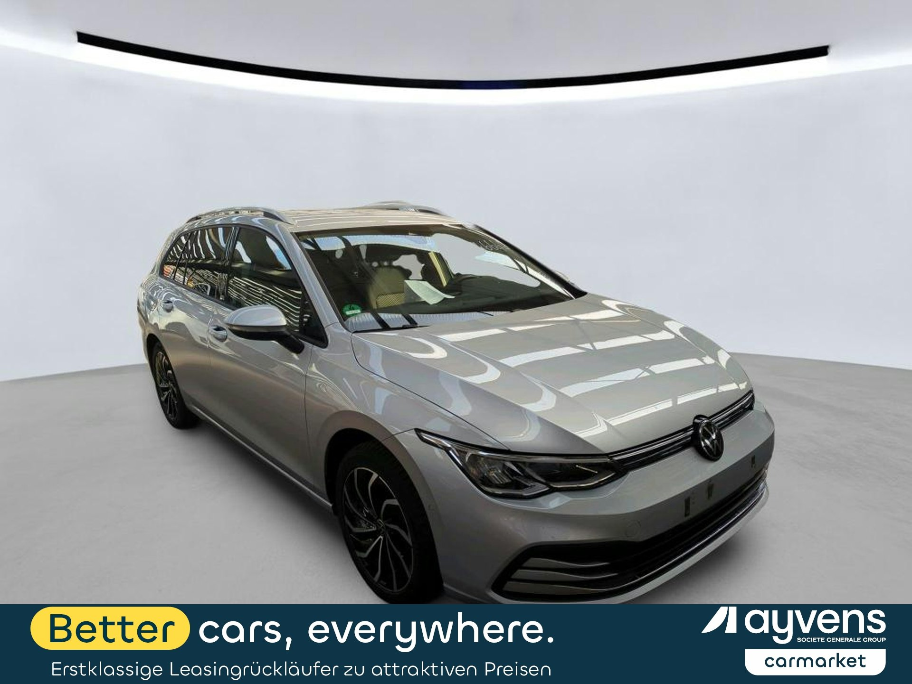

Diesel · DSG automat · 52,468 km · první registrace 20. 6. 2023 · aktuální nabídka 9,900 EUR bez DPH

| Typ klienta | Pořízení přes nás | Cena v CZ bazaru | Úspora | Úspora % |
|---|---|---|---|---|
| Fyzická osoba / neplátce porovnává ceny vč. DPH; platí 21 % DPH státu při dovozu z EU | 370 521 Kč | 495 000 Kč | 124 479 Kč | 25.1 % |
| Plátce DPH (právnická osoba) DPH si odečte, porovnává netto (cena ÷ 1,21) | 306 216 Kč | 409 091 Kč | 102 875 Kč | 25.1 % |
Definice zisku/úspory: Fyzická osoba (neplátce) srovnává ceny včetně DPH — její úspora je rozdíl mezi cenou v ČR bazaru a pořizovací cenou přes nás po zaplacení 21 % DPH státu (samovyměření z dovozu EU). Plátce DPH (právnická osoba) si DPH odečte, proto pracuje s cenami netto; jeho úspora = tržní cena netto (÷1,21) − pořizovací cena netto. Procento úspory je u obou stejné, absolutní částka vyšší u fyzické osoby. CZ cena = nejnižší srovnatelný inzerát na sauto.cz (konzervativní podlaha), NEOVĚŘENO.
| Nabídka 9900 EUR × 25.21 | 249 579 Kč |
| Aukční poplatek + náklady pro zemi | 11 350 Kč |
| Doprava DE→ČR | 9 787 Kč |
| Registrace / administrativa | 7 500 Kč |
| Příprava / detailing | 8 000 Kč |
| Servisní rezerva (orient., report nestažen) | 10 000 Kč |
| Zpracování / provize | 10 000 Kč |
| All-in — plátce DPH (netto) | 306 216 Kč |
| All-in — fyzická osoba (vč. 21 % DPH) | 370 521 Kč |
Fyzická osoba k netto částce připočítá 21 % DPH ze samovyměření při dovozu z EU. Plátce DPH si tuto DPH odečte, proto pracuje s netto částkou.
Nezávislé podklady o stavu vozu z evropské aukce. (PDF se nahrávají do složky docs/.)
Výbava: Zadní kamera, tažné zařízení, DAB, vyhř. sedadla, bezdrát. nabíjení, LED, alu, lane assist